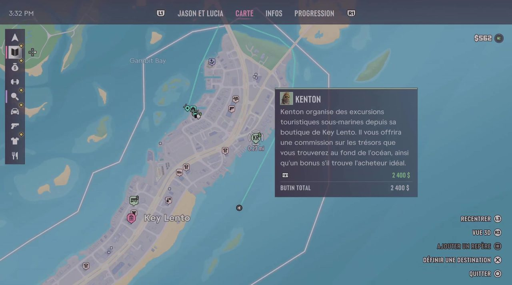
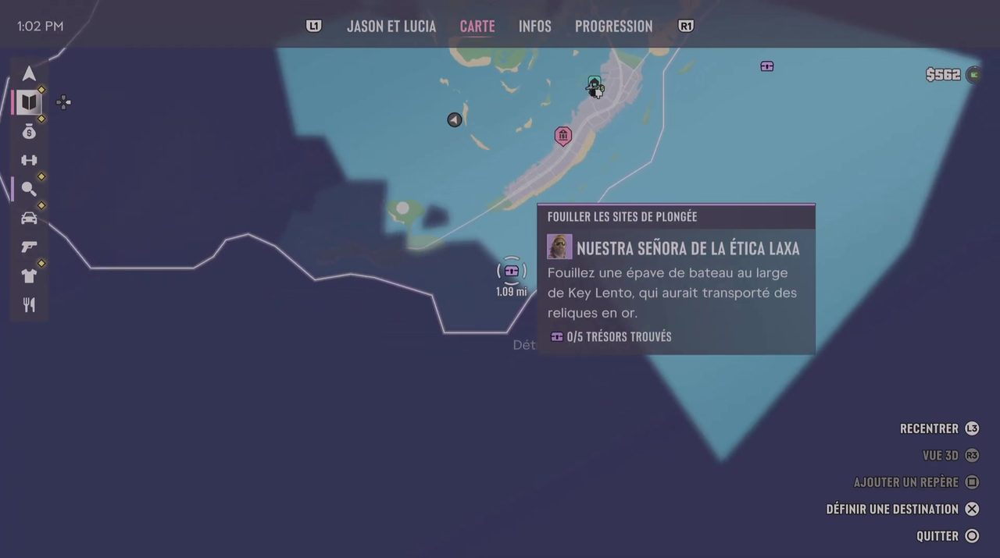
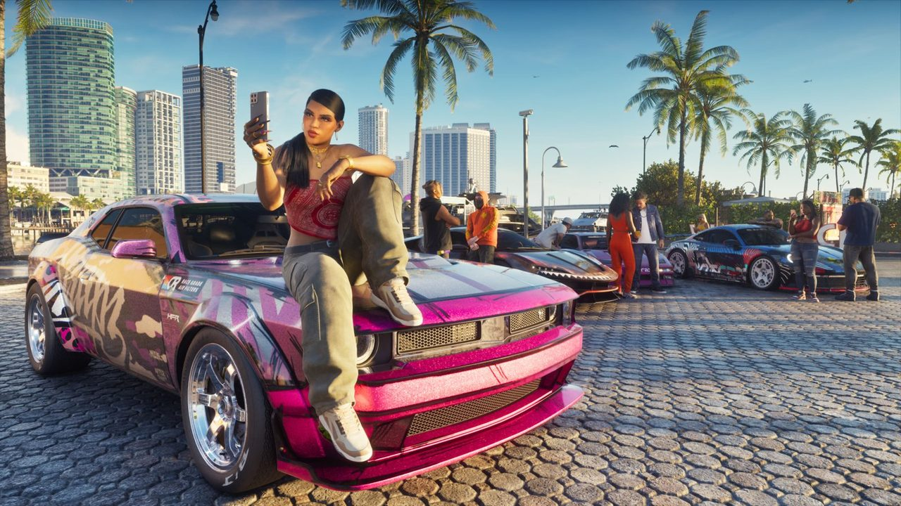
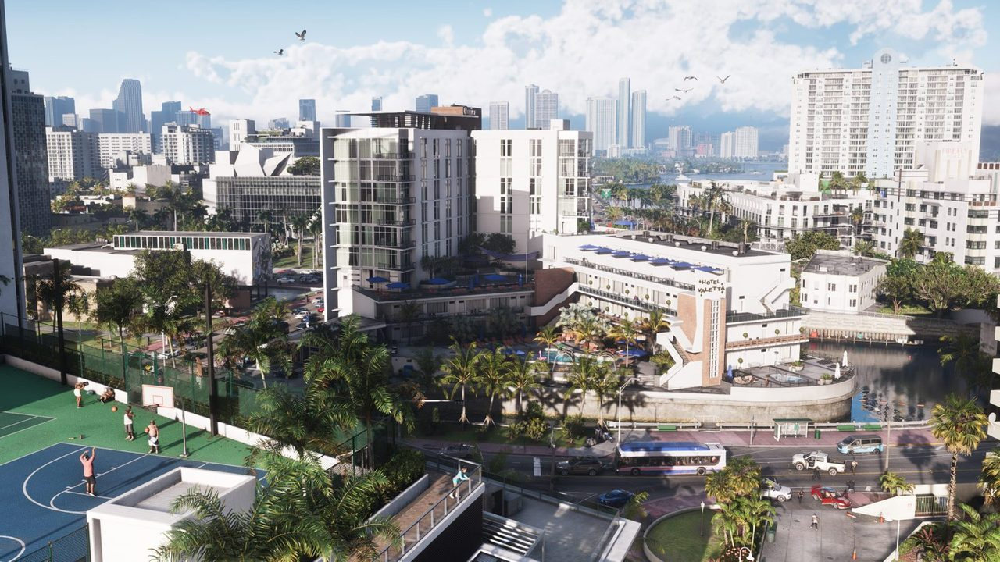

La carte de GTA 6 : Leonida et Vice City
Leonida, c'est la Floride version Rockstar : Vice City, les Keys, les marais, la côte oubliée, la campagne et la montagne. Retrouve ici tous nos guides et articles sur la carte et les lieux à visiter.
La carte interactive de Leonida
Zoom sur Key Lento, sur la vraie carte du jeu
Nos captures de la carte en jeu (PS5), autour de Key Lento, là où démarre l'aventure : la boutique de Kenton pour les plongées au trésor, et l'épave Nuestra Señora de la Ética Laxa au large.


Tous les lieux, région par région
Secrets
- L'œuf de Pâques en haut de l'antenne Vice City
Au sommet de la plus haute antenne radio de Vice City. Compte environ 7 minutes de grimpette. - Bigfoot (le « Skunk Ape ») Grassrivers
Dans les marais de Grassrivers, au bord des routes du début de partie. - Le chien à lunettes en jet-ski En mer
En pleine mer, loin des côtes. - L'appartement de Dexter Vice City
Washington Island, à Vice City. - Le crabe géant Grassrivers
Un avant-poste de recherche sur les crabes abandonné, au sud-ouest de Pelican Valley. - Le livre qui parle de GTA 4 Leonida Keys
Dans la maison de Jason. - L'Eclipse de Paul Walker (Fast & Furious) Vice City
Garage d'une villa sur Vespucci Island (Rialto Islands), Vice City. - Le comic « RX-Men », parodie des X-Men Leonida Keys
Supérette 24/7 de Key Lento. - L'enlèvement par un OVNI (trophée secret) Port Gellhorn
Comté de Kelly, au nord-ouest de la prison d'État de Leonida ou au sud-est de Port Gellhorn. De nuit, seul, après minuit, à partir du chapitre 2. Laboratoire final au sud de Hamlet (comté de Mariana). - La radio cachée The Vault Vice City
Dans la boîte de nuit The Vault, Downtown Vice City (au sud du Jack of Hearts, à l'ouest du NINE1NINE). - La playlist cachée de Kodak Black (The Sniper of La Perle) Vice City
Quartier de La Perle et club Jack of Hearts (Crosstown), à Vice City. - Laptop de Vanessa et garage Auntie's Place (Pink Growler) Vice City
Appartement de Vanessa à Vice City (chapitre 3), puis garage Auntie's Place à La Perle, près d'Aunt Zola's Soul Food.
Armes gratuites
- Drug Mule KZ-59 (fusil d'assaut) Leonida Keys
Sous l'eau, près d'un hors-bord coulé au large de la côte nord des Riquezas Keys. Repère les paquets qui flottent. - Assassin Nipper .38 (pistolet) Leonida Keys
Sur l'épave d'un bateau espion, pointe sud de l'île la plus au sud-est des Permit Keys. Ouvre la trappe au milieu du pont. - Smuggler Gorse 425 (fusil à pompe) Leonida Keys
Sur le sable, à côté d'un bateau de contrebandiers échoué, sur l'île la plus au nord des Permit Keys. - Swamp Bait Akulus et Cruel Huntsman's SM-69 Grassrivers
Revolver et sniper, dans une cabane en ruine au milieu des marais de Pelican Valley. Vas-y en bateau.
Plongée et épaves
- Épaves au trésor Leonida Keys
Dans les Leonida Keys : environ 1 400 $ par épave au début du jeu (estimation OutputLag), quasiment sans risque. - Boutique de Kenton (plongée au trésor) Leonida Keys
À Key Lento. Kenton organise des excursions sous-marines : il te verse une commission sur les trésors remontés, plus un bonus s'il trouve l'acheteur idéal (capture en jeu). - Épave Nuestra Señora de la Ética Laxa Leonida Keys
Au large de Key Lento, vers le sud : un site de plongée avec 5 trésors (des reliques en or) à fouiller (capture en jeu).
Pêche
- Ta première canne à pêche Leonida Keys
Au bout du ponton derrière la maison de Jason, à Key Lento. Gratuite, dès le free roam. - Chuck's Tackle & Shot (leurres) Leonida Keys
L'Ammu-Nation de Key Lento : les leurres moyens et gros sont côté gauche du magasin. - Pêche au large En mer
Plus tu t'éloignes de la côte en bateau, plus les prises sont nombreuses et grosses.
Activités
- Borne d'arcade de Bargain World Port Gellhorn
À Port Gellhorn. Finir un des jeux débloque le trophée « Stick Fiddler ». - Console JoySystem (3 jeux jouables) Leonida Keys
Dans la maison de Jason, à Key Lento, dès le chapitre 1.
L'essentiel

Comment pêcher dans GTA 6 : canne gratuite, commandes, meilleurs spots et trophée
La pêche est dispo dès le free roam, sans permis : ta première canne t'attend gratuitement au bout du ponton derrière la maison de Jason, à Key Lento. Voici les commandes, les bons coins et l'astuce pour le trophée.

Carte de GTA 6 : les 6 régions de Leonida expliquées
Vice City, les Keys, les marais, la côte oubliée, la campagne et la montagne : le tour de Leonida pour savoir où aller.
Ça en parle aussi

Braquage de bijouterie dans GTA 6 : les 5 meilleures cibles et la méthode, étape par étape
Pour braquer une bijouterie dans GTA 6, vise les boutiques de luxe : selon Gameblog, elles rapportent de 9 000 à 25 000 $, contre 1 000 à 10 000 $ pour une bijouterie classique. Entre par l'arrière-boutique, coupe caméras et alarme au bureau, puis vide vitrines et coffre.

Quête secrète OVNI et aliens dans GTA 6 : où la trouver, étapes et récompenses
La quête secrète des aliens de GTA 6 se déclenche la nuit, seul, après minuit, à partir du chapitre 2, près d'une voiture abandonnée aux feux clignotants dans le comté de Kelly. Selon Big N, elle débloque le trophée « La vérité est ailleurs » puis des bonus permanents.

GTA 6 : mot de passe du laptop de Vanessa et garage Auntie's Place à La Perle (voiture rose gratuite)
Le mot de passe du laptop de Vanessa dans GTA 6 est Muffins, Queen, 15. Selon Big N, il ouvre un message qui mène au garage d'Auntie's Place, à La Perle, où t'attend la Pink Growler de Vanessa et un casier d'armes.

WAiNK dans GTA 6 : comment scanner animaux, véhicules et monuments (et pourquoi le faire)
Dans GTA 6, tu scannes les animaux, les véhicules et les monuments avec l'application WAiNK de ton téléphone. Selon ActuGaming, la manette vibre plus fort quand tu t'approches d'un élément scannable, et une même voiture avec une autre peinture est à rescanner.

Édition Ultimate GTA 6 : comment récupérer tous les bonus (et à quel chapitre)
Les bonus de l'Édition Ultimate de GTA 6 ne sont pas tous dispo dès le début : ils se débloquent chapitre par chapitre, dans des garages, des Ammu-Nation et des boutiques précises. Voici où aller pour chacun, d'après Dexerto.

Armes uniques GTA 6 : où trouver les meilleures armes gratuites dès le début
Pas besoin de vider ton compte à l'Ammu-Nation : GTA 6 cache une douzaine d'armes uniques gratuites dans Leonida, la plupart accessibles dès le chapitre 1. Revolvers, fusils de sniper, SMG militaire, lance-roquettes… voici où les récupérer, d'après le guide de KeenGamer.

Peut-on acheter une maison dans GTA 6 ? Garages, prix et planques expliqués
Non, tu ne peux pas acheter de maison dans GTA 6 : les planques se débloquent avec l'histoire. En revanche, tu peux acheter 8 garages, de 4 000 à 40 000 $, via l'appli Vice City Real Estate de ton téléphone. Voici la liste complète et les prix.
Liste de Randy dans GTA 6 : où trouver les voitures rares à voler
Randy, le vendeur de Leonida Auto World, te paie pour lui ramener 22 voitures de luxe. Voici les 10 premières déjà localisées, avec l'heure et le lieu.

Où trouver la voiture de Paul Walker (Fast & Furious) dans GTA 6
La Mitsubishi Eclipse verte de Brian O'Conner est cachée dans un garage de villa sur Vespucci Island, à Vice City. Voici comment la récupérer.
L'appartement de Dexter est dans GTA 6 (et son bateau aussi ?)
Rockstar a recréé l'immeuble de Miami où vivait Dexter Morgan. On t'explique où le trouver.